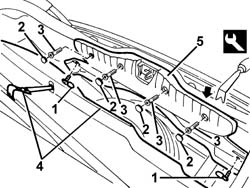
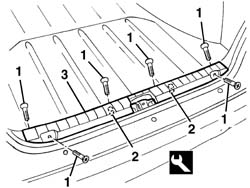

7040B22 luggage compartment/load platform moulding - r+r
- Path
- Procedures > 70 FITTINGS > 7040 BODYSHELL INTERIOR TRIMS AND FITTINGS > 7040B luggage compartment and load platform trims > 7040B22 luggage compartment/load platform moulding - r+r
- Kind
- repair procedure (removal / refitting; the operation number is the code)
- Applies to
- all engines; all production periods
- Interactive page
- https://sloeber94.github.io/elrnDB-a156/en/#/3238813
Applies to: all engines; all production periods; only with equipment: Sedan
 Removing
Removing
 Refitting
RefittingOpen the boot lid.
1. Undo the bolts and remove the retaining seals.
2. Remove the covers.
3. Unscrew the bolts
4. Lift up the platform covering and secure it using the hook.
5. Remove the trim releasing it from the internal retainers using the special tool.
 | Name | Country |
|---|---|---|
1 | Scraper blade | 1.823.015.000 |

Applies to: all engines; all production periods; only with equipment: Sedan
Refitting
RemovingCheck that the moulding is undamaged.
Position the moulding and engage the internal retainers.
Lower the platform covering.
Tighten the bolts and engage the covers.
Position the retaining seals and tighten the bolts.
Close the boot lid.
Applies to: all engines; all production periods; only with equipment: Station Wagon
Removing
RefittingOpen the tailgate.
1. Undo the bolts securing the moulding.
2. Release the inner retainers using the special tool.
| Name | Country |
|---|---|---|
1 | Scraper blade | 1.823.015.000 |
3. Remove the moulding.

Applies to: all engines; all production periods; only with equipment: Station Wagon
Refitting
RemovingCheck that the moulding is undamaged.
Position the moulding and engage the inner retainers.
Tighten the bolts securing the moulding.
Close the tailgate.
Topics that link to this page (30)
- 4420A10 l/h or r/h rear suspension spring/damper unit (one) r+r
- 4420A12 rear suspension damper (one), lh or rh - for mcpherson strut system - includes dismentling/rebuilding of assembly at bench r r
- 5010C60 lh or rh rear air outlet -one- r r
- 5505C41 cabin wiring - r r
- 5570T85 cd/audio player loader - r r
- 5580E30 receiver for car alarm remote control - r r
- 7015B18 tailgate lock striker - r+r
- 7015B44 tail gate catch control cable - r+r
- 7025B32 boot lid catch cable - r+r
- 7025B58 boot lid lock striker - r+r
- 7025B66 boot compartment seal - r+r
- 7025C28 fuel filler flap emergency opening control - repair
- 7025C31 fuel filler flap mechanical lock - r r
- 7025C32 fuel filler flap catch control - r+r
- 7035C10 Third SIDE WINDOW (one), left or right (bonded type) - R.R. - Includes. cleaning edges of window and housing in bodyshell
- 7035C14 fixed rear side window one lh or rh r r includes cleaning of housing
- 7040B04 side moulding one lh or rh of luggage compartment luggage plate r r
- 7040B06 side trim (one) lh or rh, load compartment/load platform - r r
- 7040B30 l/h or r/h side support (one) for load platform cover blind - arrange
- 7040B32 LOCK STRIKER for COMBINED BLIND COVERING load carrying compartment and PET transporter PROTECTION (one), left or right - R.R.
- 7040H10 roof panel lining - r r
- 7040H16 roof panel lining - r r
- 7040H42 rear pillar trim - r r
- 7040H62 rear window surround trim one lh or rh r r
- 7065B10 l/h or r/h rear safety belt (one) - r+r
- 7065B28 Rear seat belt HEIGHT ADJUSTER , (one), left or right - R.R.
- 7065B40 Rear seat belt reel mounting BRACKET , (one), left or right - R.R .
- 7095B66 TAILGATE LEFT integrated WIRING - R.R.
- 7095B68 TAILGATE RIGHT incorporated WIRING - R.R.
- 7210E66 R.R. REAR BUMPER